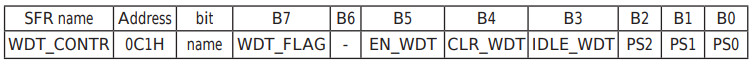
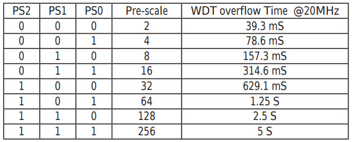
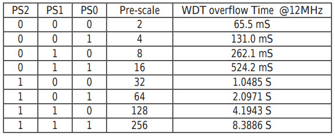
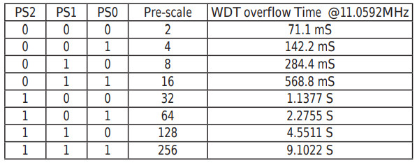

Steward
分享是一種喜悅、更是一種幸福
微處理器 - STCmicro STC15W104 - Assembly - Watchdog
參考資訊：
http://plit.de/asem-51/
http://www.stcisp.com/stcisp620_off.html
https://sourceforge.net/projects/mcu8051ide/
Watchdog啟動後，如果沒有在規定的時間內清除，則MCU將會Reboot(Hardware)，因此，為了避免當機，Watchdog是一個很棒的輔助功能，司徒這次就是利用Watchdog當作LED閃爍的用途，因為STC15W104啟動後，Port 3是輸出高電位，因此，在主程式裡面設定P3.2成0(Low)後，啟動Watchdog，然後等待Watchdog觸發Reboot，藉此閃爍LED，而Watchdog的暫存器內容如下：

Prescale：WDT overflow time = (12 × Pre-scale × 32768) / SYSclk



main.s
.org 0h
jmp _start
.org 100h
_start:
clr p3.2
mov 0c1h, #0fah
jmp $
.end
編譯
$ mcu8051ide --compile main.s
完成